Monolith
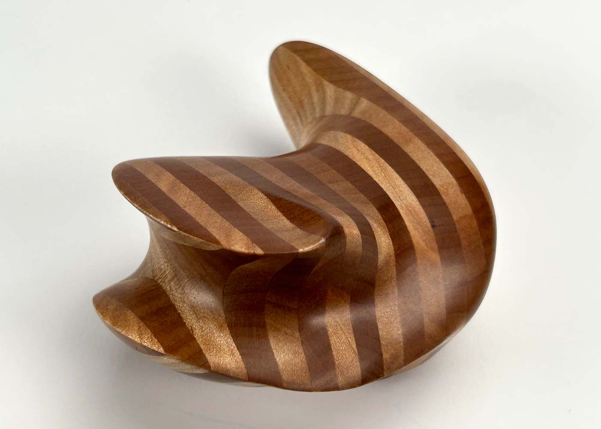
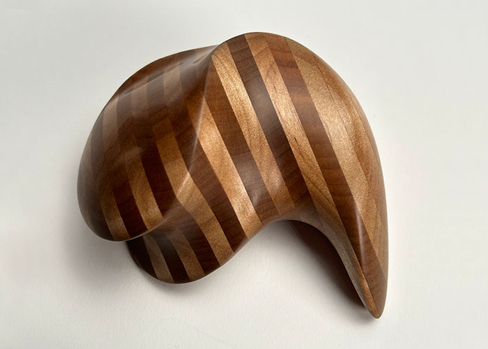
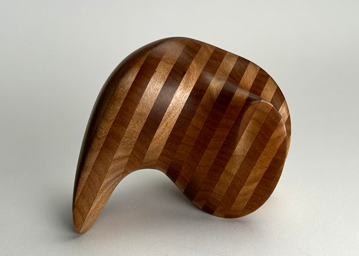
The goal of the monolith project was to design and create an organic volume that could be comfortably held in multiple different ways.
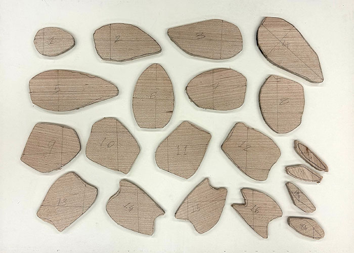
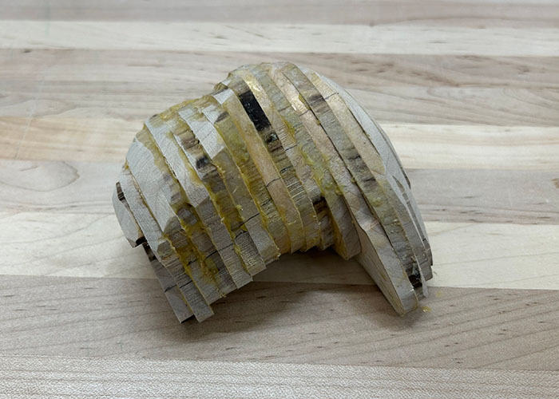
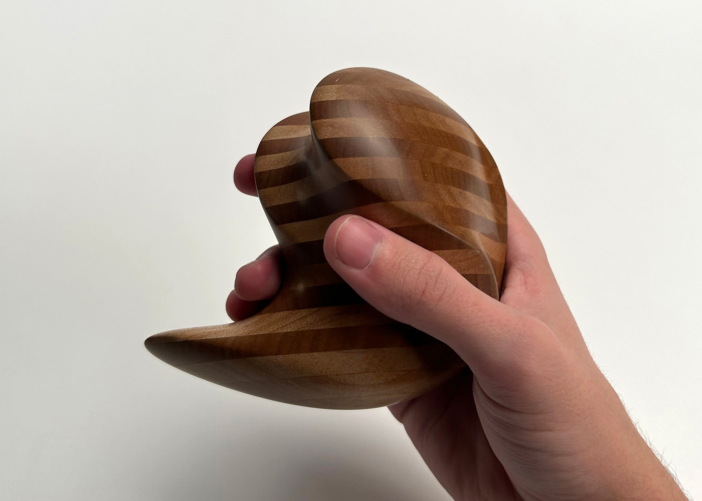
This final product was achieved by first modeling the form out of clay. Then, the clay form was sliced into planes and traced onto a plank of wood. The wood planes were then glued together and sanded into the desired shape. Finally, the monolith was oiled using linseed oil.
Lion Mask
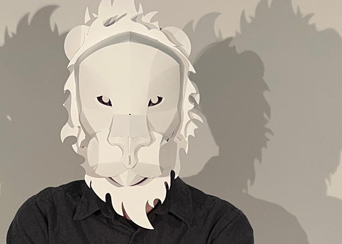
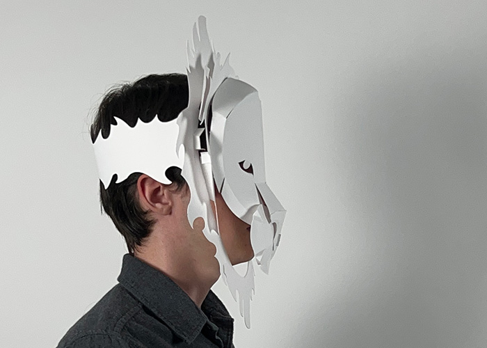
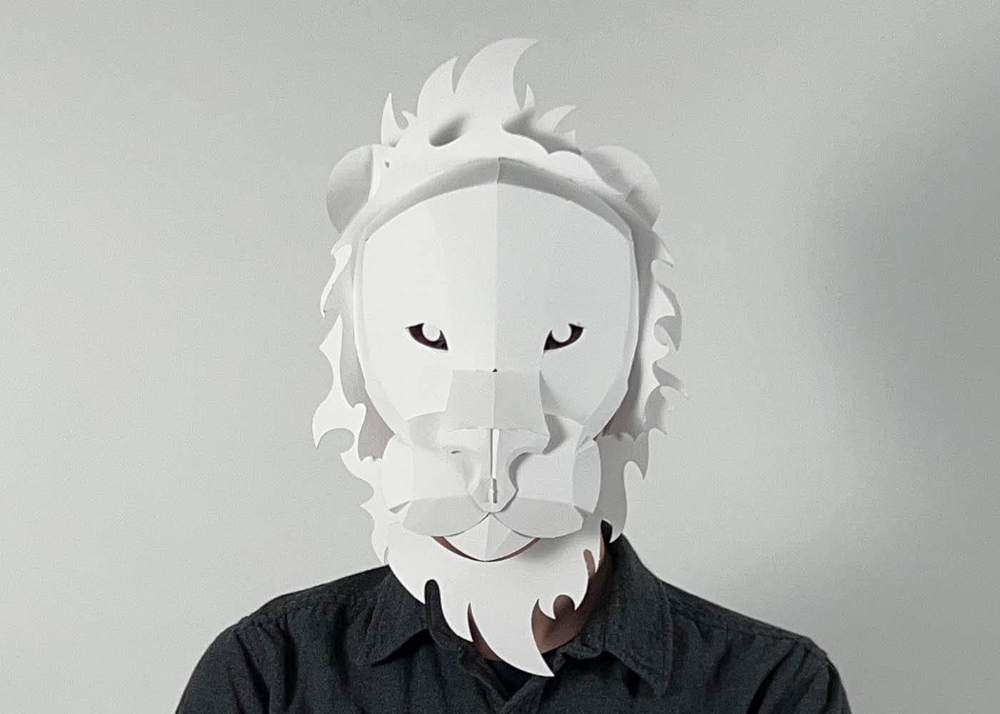
The Lion Mask was designed to be cut from a single sheet of bristol paper and then assembled based on a sheet of instructions.
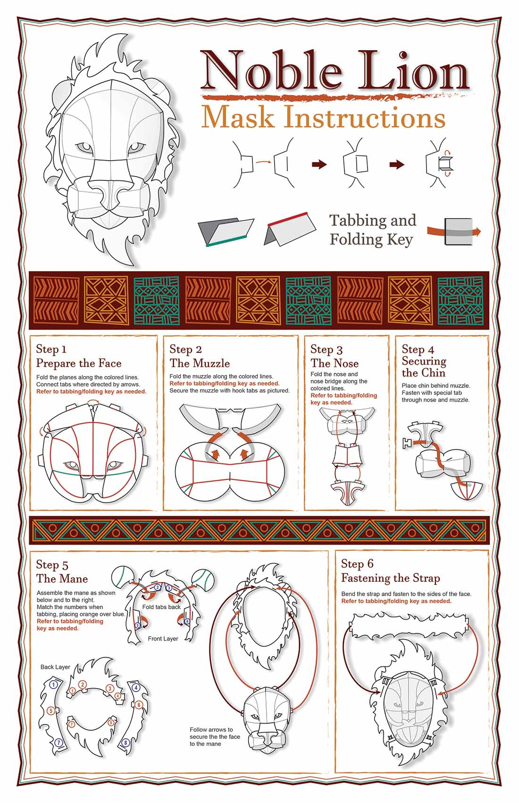
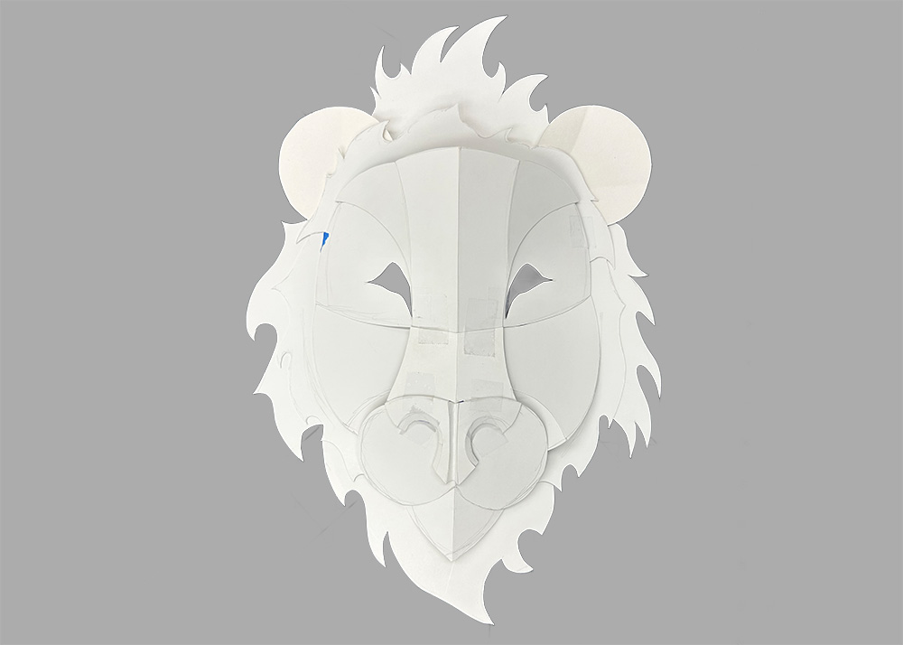
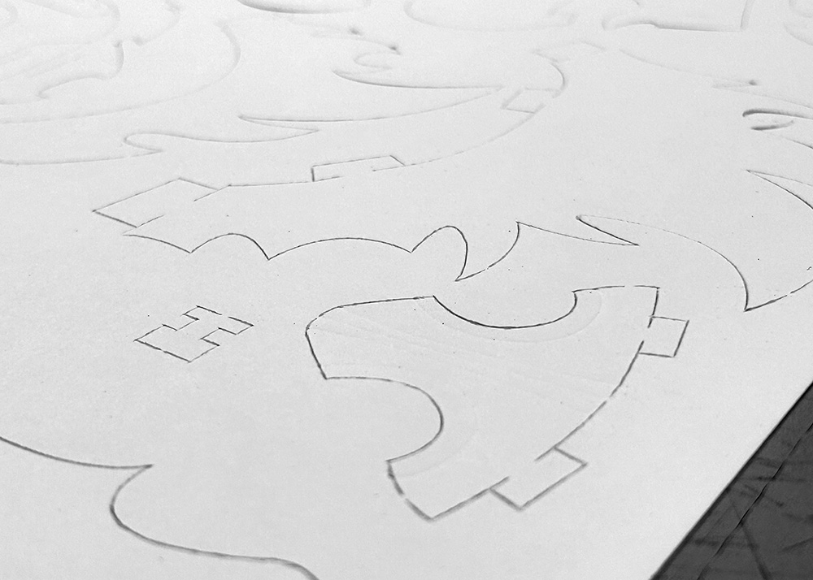
Based on early hand-cut prototypes, the mask pieces were designed in Adobe Illustrator. They were then cut and creased by a die-cutter. The instruction sheet was designed in Adobe Illustrator.
Automata
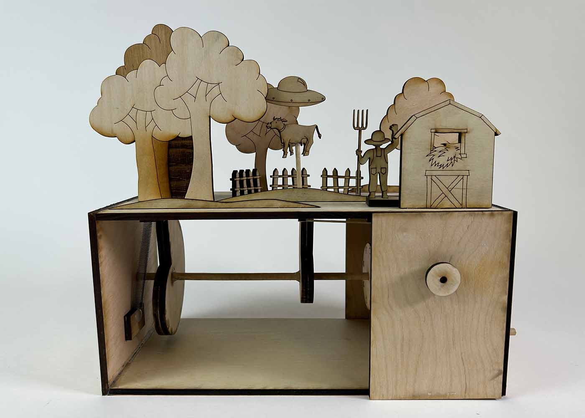
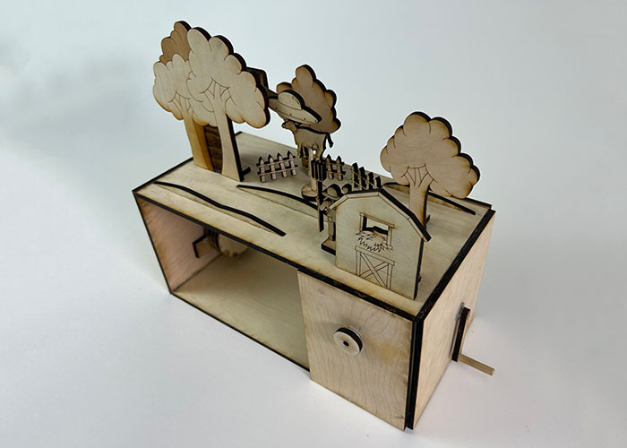
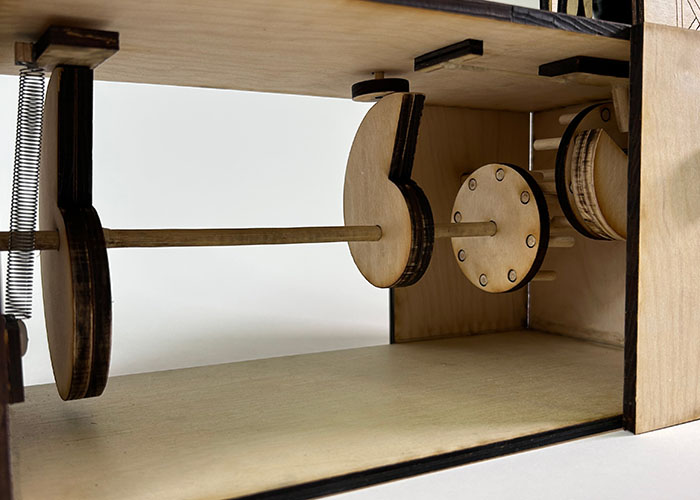
The goal of the automata project was to create a mechanism made mostly of wood. This mechanism would be used to create a small scene. This automata depicts a "failed abduction."
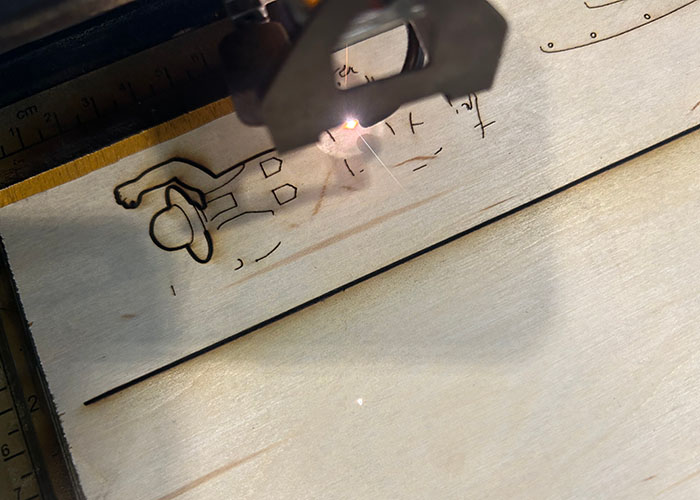
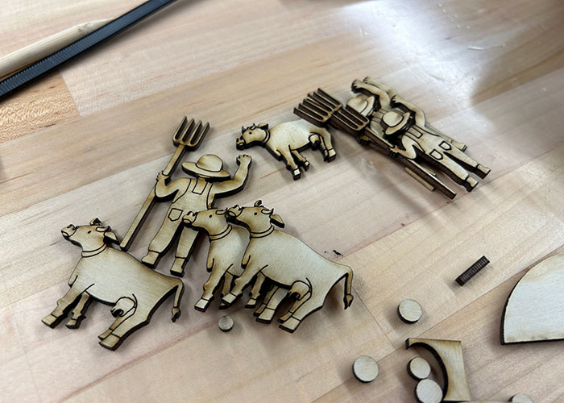
All the wooden pieces were designed in Adobe Illustrator and laser cut and laser etched. Watch the video on YouTube, too!